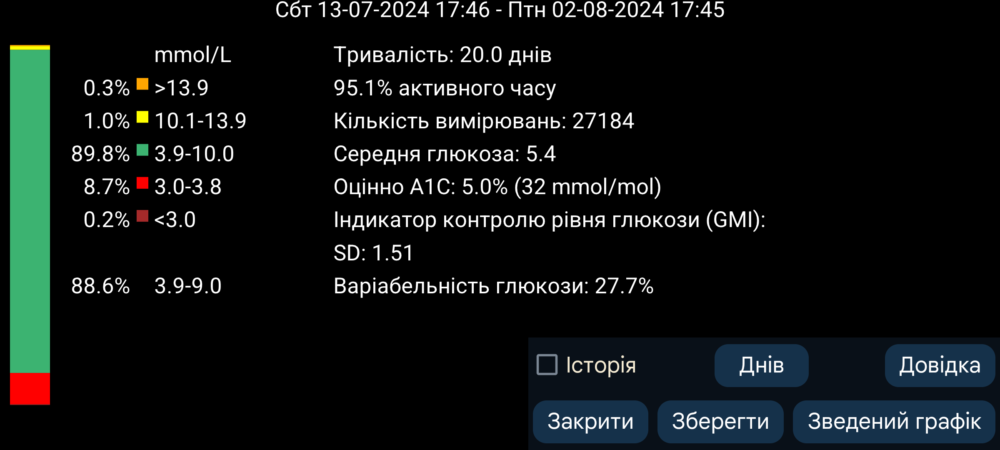
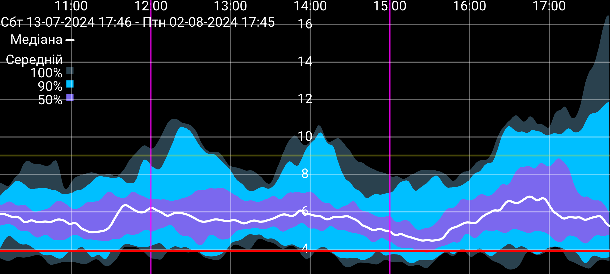

ar be de es fr hi it ja ko nl pl pt ru tr uk uz zh en
Деякі показники взято з AGP з незначними змінами.
Кількість аналізованих днів можна змінити кнопкою Днів . Період закінчується в момент, що відповідає правій межі екрана, і охоплює вказану кількість попередніх днів. Усі дані ґрунтуються лише на значеннях глюкози, які датчик щохвилини надсилає через Bluetooth; у Juggluco це називається Потік .
Ліворуч на екрані показано відсотки вимірювань у певних діапазонах глюкози. Стандартні діапазони відображаються завжди. Якщо в лівому меню→Налашт.→Дисплейзадано нестандартний цільовий діапазон, час у цьому діапазоні показується під стандартними.
Відсоток часу, протягом якого Juggluco отримував значення глюкози від датчика.
Оцінює HbA1c за середньою глюкозою за старішою формулою Nathan та ін., 2008. Див. https://professional.diabetes.org/diapro/glucose_calc — калькулятор.
Цей показник наведено тут на випадок, якщо хтось шукає значення з програми Abbott Libre 2. У 2018 році GMI замінив цей показник.
Обчислюється із середньої глюкози за загальновживаною формулою, див. https://www.jaeb.org/gmi/. Це емпірично визначений прогноз HbA1c, також відомого як A1c, у відсотках і mmol/mol. Особисто для мене оцінний A1C є кращим прогнозом, ніж GMI, але в програмі Abbott Libre 3 використовується GMI.
Коефіцієнт варіації %CV=(SD/середнє)×100% як міра мінливості глюкози. Вищий коефіцієнт означає, що значення глюкози далі від середнього.
Створює звіт про значення глюкози за вказану кількість днів. Він містить статистику, оглядовий графік і зображення окремих днів. Звіт можна надрукувати у PDF і надіслати електронною поштою медичному фахівцю. Потрібно ввімкнути ліве меню→Налашт.→Обмін даними→Вебсервер. Відкривається адресаhttp://127.0.0.1:17580/x/report у веббраузері.
(Показується лише за наявності щонайменше 9 днів потокових значень глюкози.)
Усі потокові значення за цей період використовуються для побудови складеного графіка, який для кожної хвилини доби показує розподіл глюкози. Чорна або біла медіанна лінія показує значення, нижче якого в кожну хвилину лежить 50% значень. Найсвітліша синя зона охоплює всі значення. Трохи темніша зона навколо медіани містить 90% значень, а найтемніша — 50%. Якщо розглядати межі зон як лінії: під найнижчою лежить 0% значень, під другою знизу — 5%, під третьою — 25%, під чорною медіанною лінією — 50%; далі йдуть 75%, 95% і 100%.
Для кращого вигляду криву згладжено біноміальним фільтром.
Торкніться будь-де, щоб закрити зведений графік, крім лівого або правого краю, які пересувають графік назад або вперед у межах доби. Криву також можна прокручувати, а масштаб часу — змінювати рухом двох пальців назустріч або в різні боки.